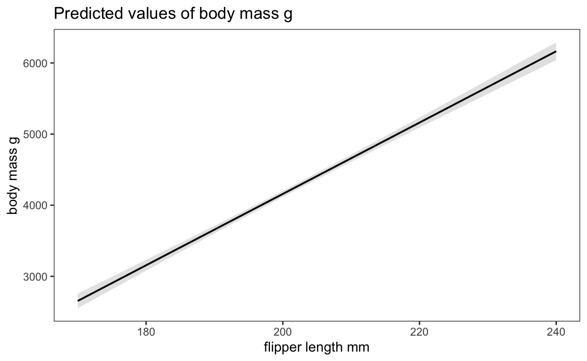
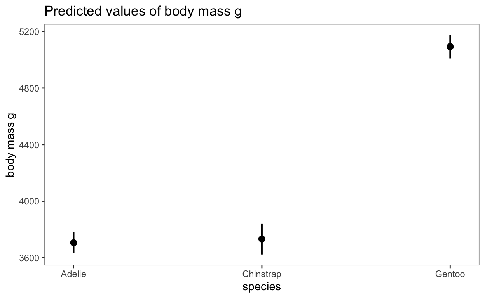

Rewrite: “There are statistical effects, marginal effects, marginal means, marginal slopes, conditional effects, conditional marginal effects, marginal effects at the mean, and many other similarly-named ideas. There are also regression coefficients and estimates, which have marginal effects vibes, but may or may not actually be marginal effects depending on the complexity of the model.”
rewrite: “Put as simply as possible, in the world of statistics, “marginal” means “additional,” or what happens to outcome variable when explanatory variable changes a little.”
rewrite: Importantly, the slope shows the relationship between and . If increases by 1 unit, increases by 2: when is 1, is 1; when is 2, is 3, and so on. We can call this the marginal effect, or the change in that results from one additional .
rewrte: In the calculus world, the term “marginal” isn’t used all that often. Instead they talk about derivatives. But in the end, all these marginal/derivative things are just slopes. My first exposure to the word “marginal” meaning “changes in things” wasn’t actually in the world of statistics, but in economics. My first exposure to the word “marginal” meaning “changes in things” wasn’t actually in the world of statistics, but in economics.
At its core, regression modeling in statistics is all about fancy ways of finding averages and fancy ways of drawing lines. Even if you’re doing non-regression things like t-tests, those are technically still just regression behind the scenes. Statistics is all about lines, and lines have slopes, or derivatives. These slopes represent the marginal changes in an outcome. As you move an independent/explanatory variable , what happens to the dependent/outcome variable ?
| Characteristic | Beta | 95% CI1 | p-value |
|---|---|---|---|
| flipper_length_mm | 50 | 47, 53 | <0.001 |
| 1 CI = Confidence Interval | |||
$flipper_length_mm
| Characteristic | Beta | 95% CI1 | p-value |
|---|---|---|---|
| species | |||
| Adelie | — | — | |
| Chinstrap | 27 | -106, 160 | 0.7 |
| Gentoo | 1,386 | 1,274, 1,498 | <0.001 |
| 1 CI = Confidence Interval | |||
$species
| Characteristic | Beta | 95% CI1 | p-value |
|---|---|---|---|
| flipper_length_mm | 18 | 12, 23 | <0.001 |
| bill_depth_mm | 74 | 36, 113 | <0.001 |
| species | |||
| Adelie | — | — | |
| Chinstrap | -79 | -168, 11 | 0.084 |
| Gentoo | 1,154 | 921, 1,387 | <0.001 |
| sex | |||
| female | — | — | |
| male | 435 | 347, 524 | <0.001 |
| 1 CI = Confidence Interval | |||
rewrite: Interpreting these coefficients is a little different now, since we’re working with multiple moving parts. In regular stats class, you’ve probably learned to say something like “Holding all other variables constant, a 1 mm increase in flipper length is associated with a 17.5 gram increase in body mass, on average” (slider) or “Holding all other variables constant, Chinstrap penguins are 79 grams lighter than Adelie penguins, on average” (switch).
rewrite: This idea of “holding everything constant” though can be tricky to wrap your head around. Imagining this model like a mixer board can help, though. Pretend that you set the bill depth slider to some value (0, the average, whatever), you flip the Chinstrap and Gentoo switches off, you flip the male switch off, and then you slide only the flipper length switch up and down. You’d be looking at the marginal effect of flipper length for female Adelie penguins with an average (or 0 or whatever) length of bill depth. Stop moving the flipper length slider and start moving the bill depth slider and you’ll see the marginal effect of bill depth for female Adelie penguins. Flip on the male switch and you’ll see the marginal effect of bill depth for male Adelie penguins. Flip on the Gentoo switch and you’ll see the marginal effect of bill depth for male Gentoo penguins. And so on.
What are marginal effects?
…but we haven’t officially defined it in the statistics world yet. It’s tricky to do that, though, because there are so many synonyms and near synonyms for the idea of a statistical effect, like marginal effect, marginal mean, marginal slope, conditional effect, conditional marginal effect, and so on.
- Marginal effect: the statistical effect for continuous explanatory variables; the partial derivative of a variable in a regression model; the effect of a single slider
- Conditional effect or group contrast: the statistical effect for categorical explanatory variables; the difference in means when a condition is on vs. when it is off; the effect of a single switch
Slopes and marginal effects
Rows: 168
Columns: 17
$ country_name <chr> "Mexico", "Suriname", "Sweden", "Sw…
$ country_text_id <chr> "MEX", "SUR", "SWE", "CHE", "GHA", …
$ year <dbl> 2020, 2020, 2020, 2020, 2020, 2020,…
$ region <fct> Latin America and the Caribbean, La…
$ disclose_donations_ord <dbl> 3, 1, 2, 0, 2, 1, 3, 2, 3, 2, 2, 0,…
$ public_sector_corruption <dbl> 48.8, 24.8, 1.3, 1.4, 65.2, 57.1, 3…
$ polyarchy <dbl> 64.7, 76.1, 90.8, 89.4, 72.0, 70.3,…
$ civil_liberties <dbl> 71.2, 87.7, 96.9, 94.8, 90.4, 82.2,…
$ disclose_donations <lgl> TRUE, FALSE, FALSE, FALSE, FALSE, F…
$ iso2c <chr> "MX", "SR", "SE", "CH", "GH", "ZA",…
$ population <dbl> 128932753, 586634, 10353442, 863656…
$ gdp_percapita <dbl> 8922.6125, 7529.6141, 51541.6557, 8…
$ capital <chr> "Mexico City", "Paramaribo", "Stock…
$ longitude <chr> "-99.1276", "-55.1679", "18.0645", …
$ latitude <chr> "19.427", "5.8232", "59.3327", "46.…
$ income <chr> "Upper middle income", "Upper middl…
$ log_gdp_percapita <dbl> 9.096344, 8.926599, 10.850146, 11.3…$civil_liberties
| Characteristic | Beta | 95% CI1 | p-value |
|---|---|---|---|
| civil_liberties | -0.80 | -0.96, -0.65 | <0.001 |
| 1 CI = Confidence Interval | |||
'emmGrid' object with variables:
civil_liberties = 69.682rewrite: The coefficient by itself is thus enough to tell us what the effect of moving civil liberties around is—it is the marginal effect of civil liberties on public sector corruption. Slide the civil liberties index up by 1 point and public sector corruption will be −0.81 points lower, on average.
| Characteristic | Beta | 95% CI1 | p-value |
|---|---|---|---|
| civil_liberties | 1.6 | 0.75, 2.4 | <0.001 |
| I(civil_liberties^2) | -0.02 | -0.03, -0.01 | <0.001 |
| 1 CI = Confidence Interval | |||
civil_liberties civil_liberties.trend SE df t.ratio p.value
25 0.594 0.2527 165 2.352 0.0198
55 -0.587 0.0806 165 -7.283 <.0001
80 -1.572 0.1509 165 -10.419 <.0001marginaleffects’s and emmeans’s philosophies of averaging
We deal with the uncertainty of these marginal effects by taking averages, which is why we talk about “average marginal effects” when interpreting these effects. So far, marginaleffects::marginaleffects() and emmeans::emtrends() have given identical results. But behind the scenes, these packages take two different approaches to calculating these marginal averages. The difference is very subtle, but incredibly important.
rowid type term dydx std.error statistic
1 1 response civil_liberties -1.225445 0.1019799 -12.016538
2 2 response civil_liberties -1.875351 0.1987822 -9.434199
3 3 response civil_liberties -2.237723 0.2583903 -8.660244
4 4 response civil_liberties -2.155007 0.2446435 -8.808766
5 5 response civil_liberties -1.981699 0.2160883 -9.170786
6 6 response civil_liberties -1.658716 0.1642877 -10.096409
p.value conf.low conf.high predicted predicted_hi
1 2.909078e-33 -1.425322 -1.025568 54.462726 54.452224
2 3.939914e-21 -2.264957 -1.485745 28.883942 28.867870
3 4.707575e-18 -2.744158 -1.731287 9.965356 9.946179
4 1.265311e-18 -2.634500 -1.675515 14.577368 14.558900
5 4.695842e-20 -2.405224 -1.558174 23.677380 23.660397
6 5.730193e-24 -1.980714 -1.336718 38.601697 38.587482
predicted_lo public_sector_corruption civil_liberties
1 54.462726 48.8 71.2
2 28.883942 24.8 87.7
3 9.965356 1.3 96.9
4 14.577368 1.4 94.8
5 23.677380 65.2 90.4
6 38.601697 57.1 82.2
civil_liberties.1 eps
1 5069.44 0.00857
2 7691.29 0.00857
3 9389.61 0.00857
4 8987.04 0.00857
5 8172.16 0.00857
6 6756.84 0.00857# A tibble: 1 × 2
term avg_dydx
<chr> <dbl>
1 civil_liberties -1.17 Term Effect Std. Error z value Pr(>|z|) 2.5 % 97.5 %
1 civil_liberties -1.166 0.09484 -12.29 < 2.22e-16 -1.352 -0.9797
Model type: lm
Prediction type: response Marginal effects at the mean (the default in emmeans)
The emmeans package actually calculates two average things: “marginal effects at the means” (MEM), or average slopes using emtrends(), and “estimated marginal means” (EMM), or average predictions using emmeans().
[1] 69.68155 civil_liberties civil_liberties.trend SE df lower.CL upper.CL
69.7 -1.17 0.0948 165 -1.35 -0.978
Confidence level used: 0.95 Term Effect Std. Error z value Pr(>|z|) 2.5 % 97.5 %
1 civil_liberties -1.166 0.09484 -12.29 < 2.22e-16 -1.352 -0.9797
Model type: lm
Prediction type: response The disadvantage of this approach is that no actual country has a civil_liberties score of exactly 70.16. If we had other covariates in the model, no country would have exactly the average of every variable. The marginal effect is thus calculated based on a hypothetical country that might not possibly exist in real life.
Marginal effects in logistic regression
Disclosure laws is a binary outcome, so we’ll use logistic regression to constrain the fitted values and predictions to between 0 and 1.
| Characteristic | log(OR)1 | 95% CI1 | p-value |
|---|---|---|---|
| public_sector_corruption | -0.07 | -0.09, -0.05 | <0.001 |
| 1 OR = Odds Ratio, CI = Confidence Interval | |||
Each row contains actual observed data, so the predictions arguably reflect variation in reality. marginaleffects() helpfully converts the AME into percentage points (note that it says “Prediction type: response”), so we can interpret the value directly.
Term Effect Std. Error z value Pr(>|z|)
1 public_sector_corruption -0.00846 0.0002607 -32.45 < 2.22e-16
2.5 % 97.5 %
1 -0.008971 -0.007949
Model type: glm
Prediction type: response public_sector_corruption prob SE df asymp.LCL asymp.UCL
45.8 0.244 0.0472 Inf 0.164 0.348
Confidence level used: 0.95
Intervals are back-transformed from the logit scale public_sector_corruption public_sector_corruption.trend SE df
45.8 -0.0125 0.0017 Inf
asymp.LCL asymp.UCL
-0.0158 -0.00916
Confidence level used: 0.95 For fun, let’s make a super fancy logistic regression model with a quadratic term and an interaction. We’ll compare the AME and MEM for public sector corruption again. This is where either marginaleffects() or emtrends() is incredibly helpful—correctly combining all the necessary coefficients, given that corruption is both squared and interacted, and given that there are other variables to worry about, would be really hard.
Term
1 public_sector_corruption
2 polyarchy
3 log_gdp_percapita
4 region
5 region
6 region
7 region
8 region
Contrast
1 dY/dX
2 dY/dX
3 dY/dX
4 Latin America and the Caribbean - Eastern Europe and Central Asia
5 Middle East and North Africa - Eastern Europe and Central Asia
6 Sub-Saharan Africa - Eastern Europe and Central Asia
7 Western Europe and North America - Eastern Europe and Central Asia
8 Asia and Pacific - Eastern Europe and Central Asia
Effect Std. Error z value Pr(>|z|) 2.5 % 97.5 %
1 -0.006534 0.001917 -3.4083 0.00065359 -0.010291 -0.002776
2 0.002264 0.001720 1.3157 0.18828364 -0.001108 0.005636
3 0.009599 0.037821 0.2538 0.79965470 -0.064528 0.083725
4 -0.261743 0.103884 -2.5196 0.01174961 -0.465351 -0.058135
5 -0.206474 0.108353 -1.9056 0.05670573 -0.418841 0.005893
6 -0.249862 0.115326 -2.1666 0.03026747 -0.475896 -0.023827
7 -0.291087 0.097259 -2.9929 0.00276345 -0.481711 -0.100462
8 -0.204177 0.095337 -2.1416 0.03222347 -0.391035 -0.017319
Model type: glm
Prediction type: response ich: er sagt also, dass marginaleffects package is viel besser. er: We can use emtrends() to get region-specific slopes, but we’ll get different results because of the order of averaging. emmeans creates averages and then plugs them in; marginaleffects plugs all the values in and then creates averages:
rowid type term dydx std.error
1 1 response public_sector_corruption -0.0088254415 0.007680990
2 2 response public_sector_corruption -0.0008969785 0.007896921
3 3 response public_sector_corruption -0.0067591826 0.005100332
4 4 response public_sector_corruption -0.0067268576 0.005458787
5 5 response public_sector_corruption -0.0024596871 0.003221358
6 6 response public_sector_corruption -0.0058644129 0.005559329
statistic p.value conf.low conf.high predicted
1 -1.1489979 0.2505568 -0.023879905 0.006229022 0.34873390
2 -0.1135859 0.9095661 -0.016374659 0.014580702 0.52795548
3 -1.3252437 0.1850903 -0.016755649 0.003237284 0.90452460
4 -1.2322991 0.2178374 -0.017425883 0.003972168 0.90523369
5 -0.7635559 0.4451320 -0.008773434 0.003854059 0.01975641
6 -1.0548778 0.2914812 -0.016760498 0.005031672 0.05383706
predicted_hi predicted_lo disclose_donations
1 0.34864864 0.34873390 TRUE
2 0.52794682 0.52795548 FALSE
3 0.90445931 0.90452460 FALSE
4 0.90516870 0.90523369 FALSE
5 0.01973265 0.01975641 FALSE
6 0.05378041 0.05383706 FALSE
public_sector_corruption public_sector_corruption.1 polyarchy
1 48.8 2381.44 64.7
2 24.8 615.04 76.1
3 1.3 1.69 90.8
4 1.4 1.96 89.4
5 65.2 4251.04 72.0
6 57.1 3260.41 70.3
log_gdp_percapita region eps
1 9.096344 Latin America and the Caribbean 0.00966
2 8.926599 Latin America and the Caribbean 0.00966
3 10.850146 Western Europe and North America 0.00966
4 11.358436 Western Europe and North America 0.00966
5 7.611162 Sub-Saharan Africa 0.00966
6 8.641039 Sub-Saharan Africa 0.00966# A tibble: 6 × 2
region region_ame
<fct> <dbl>
1 Eastern Europe and Central Asia -0.00751
2 Latin America and the Caribbean -0.00326
3 Middle East and North Africa -0.00629
4 Sub-Saharan Africa -0.00435
5 Western Europe and North America -0.0112
6 Asia and Pacific -0.00830 public_sector_corruption region
45.8 Eastern Europe and Central Asia
45.8 Latin America and the Caribbean
45.8 Middle East and North Africa
45.8 Sub-Saharan Africa
45.8 Western Europe and North America
45.8 Asia and Pacific
public_sector_corruption.trend SE df asymp.LCL asymp.UCL
-0.01119 0.00554 Inf -0.0221 -0.000328
-0.00734 0.00611 Inf -0.0193 0.004634
-0.01172 0.01105 Inf -0.0334 0.009934
-0.01001 0.00607 Inf -0.0219 0.001875
-0.00335 0.00769 Inf -0.0184 0.011719
-0.01371 0.00667 Inf -0.0268 -0.000631
Confidence level used: 0.95 We can replicate the results from emtrends() with marginaleffects() if we plug in average or representative values (more on that in the next section), since that follows the same averaging order as emmeans (i.e. plugging averages into the model)
rowid type term contrast dydx
1 1 response public_sector_corruption mean(dY/dX) -0.011168104
2 2 response public_sector_corruption mean(dY/dX) -0.007328847
3 3 response public_sector_corruption mean(dY/dX) -0.011767056
4 4 response public_sector_corruption mean(dY/dX) -0.010039978
5 5 response public_sector_corruption mean(dY/dX) -0.003364667
6 6 response public_sector_corruption mean(dY/dX) -0.013746020
std.error statistic p.value conf.low conf.high
1 0.005726006 -1.9504176 0.05112636 -0.02239087 5.466256e-05
2 0.006922869 -1.0586431 0.28976236 -0.02089742 6.239726e-03
3 0.011096585 -1.0604214 0.28895292 -0.03351596 9.981850e-03
4 0.006336567 -1.5844507 0.11309118 -0.02245942 2.379465e-03
5 0.007755764 -0.4338279 0.66441342 -0.01856569 1.183635e-02
6 0.007017836 -1.9587264 0.05014484 -0.02750073 8.685428e-06
predicted predicted_hi predicted_lo
1 0.6810149 0.68090702 0.6810149
2 0.3065393 0.30646855 0.3065393
3 0.1019428 0.10182912 0.1019428
4 0.1151029 0.11500588 0.1151029
5 0.0240148 0.02398229 0.0240148
6 0.1497962 0.14966343 0.1497962
region
1 Eastern Europe and Central Asia
2 Latin America and the Caribbean
3 Middle East and North Africa
4 Sub-Saharan Africa
5 Western Europe and North America
6 Asia and Pacific# A tibble: 6 × 4
public_sector_corruption region polya…¹ log_g…²
<dbl> <chr> <dbl> <dbl>
1 20 Western Europe and North A… 52.8 8.57
2 20 Latin America and the Cari… 52.8 8.57
3 20 Middle East and North Afri… 52.8 8.57
4 80 Western Europe and North A… 52.8 8.57
5 80 Latin America and the Cari… 52.8 8.57
6 80 Middle East and North Afri… 52.8 8.57
# … with abbreviated variable names ¹polyarchy, ²log_gdp_percapita# A tibble: 6 × 4
public_sector_corruption region polya…¹ log_g…²
<dbl> <chr> <dbl> <dbl>
1 20 Latin America and the Cari… 54.2 8.52
2 20 Middle East and North Afri… 54.2 8.52
3 20 Western Europe and North A… 54.2 8.52
4 80 Latin America and the Cari… 54.2 8.52
5 80 Middle East and North Afri… 54.2 8.52
6 80 Western Europe and North A… 54.2 8.52
# … with abbreviated variable names ¹polyarchy, ²log_gdp_percapita disclose_donations polyarchy log_gdp_percapita
1 FALSE 52.79048 8.567353
2 FALSE 52.79048 8.567353
3 FALSE 52.79048 8.567353
4 FALSE 52.79048 8.567353
5 FALSE 52.79048 8.567353
6 FALSE 52.79048 8.567353
public_sector_corruption region
1 20 Western Europe and North America
2 20 Latin America and the Caribbean
3 20 Middle East and North Africa
4 80 Western Europe and North America
5 80 Latin America and the Caribbean
6 80 Middle East and North Africa'emmGrid' object with variables:
public_sector_corruption = 20, 80
polyarchy = 52.79
log_gdp_percapita = 8.5674
region = Western Europe and North America, Latin America and the Caribbean, Middle East and North Africa
Transformation: "logit" rowid type term dydx std.error
1 1 response public_sector_corruption -2.492603e-02 1.565163e-02
2 2 response public_sector_corruption 8.269789e-04 8.562854e-03
3 3 response public_sector_corruption -2.040529e-02 1.434164e-02
4 4 response public_sector_corruption -1.489038e-05 9.705462e-05
5 5 response public_sector_corruption -4.364956e-03 3.654751e-03
6 6 response public_sector_corruption -1.059022e-04 4.471335e-04
statistic p.value conf.low conf.high predicted
1 -1.59255190 0.1112608 -0.0556026643 0.0057505980 3.808647e-01
2 0.09657749 0.9230619 -0.0159559059 0.0176098638 3.974696e-01
3 -1.42279982 0.1547942 -0.0485143908 0.0077038166 6.579929e-01
4 -0.15342265 0.8780650 -0.0002051139 0.0001753332 7.688321e-05
5 -1.19432377 0.2323513 -0.0115281356 0.0027982242 5.452602e-02
6 -0.23684689 0.8127756 -0.0009822678 0.0007704634 5.931053e-04
predicted_hi predicted_lo disclose_donations polyarchy
1 3.806240e-01 3.808647e-01 FALSE 52.79048
2 3.974776e-01 3.974696e-01 FALSE 52.79048
3 6.577958e-01 6.579929e-01 FALSE 52.79048
4 7.673937e-05 7.688321e-05 FALSE 52.79048
5 5.448386e-02 5.452602e-02 FALSE 52.79048
6 5.920823e-04 5.931053e-04 FALSE 52.79048
log_gdp_percapita public_sector_corruption
1 8.567353 20
2 8.567353 20
3 8.567353 20
4 8.567353 80
5 8.567353 80
6 8.567353 80
region eps
1 Western Europe and North America 0.00966
2 Latin America and the Caribbean 0.00966
3 Middle East and North Africa 0.00966
4 Western Europe and North America 0.00966
5 Latin America and the Caribbean 0.00966
6 Middle East and North Africa 0.00966 public_sector_corruption region
20 Western Europe and North America
80 Western Europe and North America
20 Latin America and the Caribbean
80 Latin America and the Caribbean
20 Middle East and North Africa
80 Middle East and North Africa
public_sector_corruption.trend SE df asymp.LCL asymp.UCL
-2.49e-02 1.56e-02 Inf -0.055505 0.005650
-1.49e-05 8.59e-05 Inf -0.000183 0.000154
8.29e-04 8.60e-03 Inf -0.016018 0.017675
-4.37e-03 3.53e-03 Inf -0.011290 0.002558
-2.04e-02 1.43e-02 Inf -0.048480 0.007677
-1.06e-04 3.84e-04 Inf -0.000858 0.000646
Confidence level used: 0.95 public_sector_corruption region prob
20 Western Europe and North America 3.81e-01
80 Western Europe and North America 7.69e-05
20 Latin America and the Caribbean 3.97e-01
80 Latin America and the Caribbean 5.45e-02
20 Middle East and North Africa 6.58e-01
80 Middle East and North Africa 5.93e-04
SE df asymp.LCL asymp.UCL
0.297451 Inf -0.202129 0.96386
0.000489 Inf -0.000881 0.00103
0.182665 Inf 0.039453 0.75549
0.077558 Inf -0.097484 0.20654
0.250481 Inf 0.167060 1.14893
0.002438 Inf -0.004185 0.00537
Confidence level used: 0.95 
(Alternatively, you can use marginaleffects’s built-in plot_cap() to make this plot with one line of code):

Categorical contrasts as statistical/marginal effects
Confusingly, people sometimes also use the term “marginal effect” to talk about group averages or predicted values (I myself am guilty of this!). Technically speaking, a marginal effect is only a partial derivative, or a slope—not a predicted value or a difference in group means.
The main takeaway from this whole post is this: If you take the average before plugging values into the model, you compute average marginal effects for a combination of covariates that might not actually exist in reality. If you take the average after plugging values into the model, each original observation reflects combinations of covariates that definitely exist in reality, so the average marginal effect reflects that reality.
conclusion
To remember all these differences, here’s a table summarizing all their different approaches:
Refernces and further readings